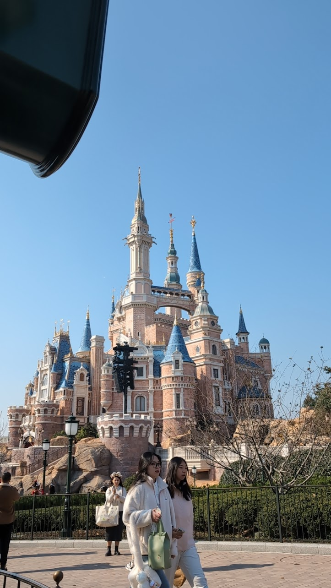

Shanghai 3 day Guide: Disney, The Bund, and Museums
Shanghai is a city where the future crashes into the past. One minute you are standing in front of a 100-year-old European bank, and the next you are riding a lightcycle in a digital grid. To help you navigate this massive metropolis.
1. Shanghai Disney
Shanghai Disney Resort is home to some of the best rides in the world, including the TRON ride. However, crowds can be intense. Here is how to survive:
- Download the App First: Before you even enter the park, download the official Shanghai Disney Resort App. You will need it to check wait times, view the map, and view times for shows.
- Get there early: It is a very long walk to get to the entrance, so come at least 1 hour early so you can get into the park at opening. Make sure to bring your passport too!
- Don't worry about ride orders: For the most part, you can experience all of the rides in a single day without preperation. However the exception is the Zootopia Land. People will rush there and there will be a line just to get into the area.
2. Best way to do the Bund
The Bund offers the most iconic view in Shanghai. the historic colonial buildings on one side and the futuristic skyline on the other, along with pleanty of shopping and activities.
- Visiting at night: The bund during the day is calm and even a bit relaxing, however visitng at night is a completely different story. The walkway to see the skyline on the colonial side will be stuffed with people shoulder to shoulder. Be prepared to push your way to get a view.
- Beware of shops: The bund has hundereds of different shops packed together, all targeting all different kidns of tourists. You may find that some trinkets are very expensive. But don't worry, the further out you go from the bund, the cheaper things will become. The same goes for food and drinks. However even on the bund, food and drinks are not too expensive.
3. Preparing for Museums
Shanghai has world-class museums, but the days of just "walking in" are over. Almost all major museums now require advance reservation via WeChat.
- Shanghai Museum: This is the place for ancient Chinese art, bronze, and ceramics. Tickets are free but must be booked days in advance on their official WeChat mini-program. For forigners, you may have trouble getting in, but the staff are very kind and are willing to help.
- Shanghai Urban Planning Exhibition Center: Located near the Shanghai Museum, this is a hidden gem. The third floor features a massive scale model of the entire city of Shanghai. It gives you a perspective on the sheer scale of the city that you cannot get anywhere else.
- M50 Creative Park: If you prefer modern art over ancient history, head to Moganshan Road. It is a complex of converted warehouses filled with contemporary art galleries, street art, and coffee shops.